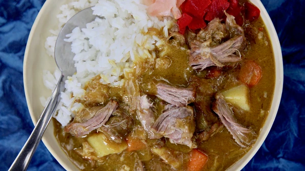

Ivan Orkin's Easy Curry

Description
Easy Japanese curry recipe from Ivan Orkin's cookbook, Gaijin Cookbook.
The recipe uses boxed curry cubes and an assortment of time saving techniques
to make a quick but delicous curry.
Ingredients
- for the braised pork:
- 1 (5-pound|2268 gram) boneless pork shoulder, cut into 2-inch chunks
- 1 tablespoon plus 1 teaspoon kosher salt
- 1 ½ teaspoons freshly ground black pepper
- 2 tablespoons vegetable oil
- 8 cups|1893 ml dashi, chicken stock, or a combination
- for the vegetables:
- 1 tablespoon vegetable oil
- 2 medium carrots, peeled and cut into 1-inch pieces
- 1 large russet potato or Japanese sweet potato, cut into large chunks
- 1 onion, cut into large chunks
- for the meat and curry:
- ½ recipe Braised Pork, with the braising liquid, thawed if frozen
- 1 (6 ½-ounce|184-gram) box Japanese curry blocks
- ½ cup|120 ml whole milk (optional)
- 2 tablespoons honey (optional)
- for serving:
- steamed rice
- Fukujin pickles or pickled sushi ginger
Steps
-
Braise the pork: Heat the oven to 350°F. Season the pork with salt and pepper.
Heat a dutch oven or other large heavy-bottomed pot over medium-high heat,
then coat with the vegetable oil. Working in batches, sear the pork pieces on all sides.
Don't crowd the pot, or you'll end up steaming rather than searing the meat.
All told, you should spend a good 15 minutes or so making sure all of the meat gets some
good color, removing the pieces to a bowl or plate as they brown. Once all the meat is
browned, pour off the fat and return the meat to the pot. Add the dashi, chicken stock,
or water and bring to a simmer, then cover the pot and slide it in the oven.
Cook for about 2 hours, or until the meat is fork-tender.
-
Reserve one third of the meat and broth for your first batch of curry. Let the rest
of the pork and broth cool to room temperature before portioning it into two plastic
containers and freezing it for future curry dinners.
-
Cook the vegetables: Heat a dutch oven or other large heavy-bottomed pot over medium-high
heat, then coat with the vegetable oil. Add the carrots and potato and cook for 4 minutes,
stirring regularly. Add the onion and cook for 2 more minutes to remove some of the rawness.
-
Make the curry: Use a slotted spoon to scoop the pork chunks into the pot. Now
measure how much braising liquid you have and add enough water to total 5 cups
of liquid, then add to the pot. Bring to a simmer, lower the heat to medium,
and cook until the carrots and potato are nearly tender, 3 to 5 minutes.
-
Break up the curry blocks and stir them into the pot. (It'll take some
diligence to make sure they're completely dissolved.) If you like your
curry a little richer/sweeter, stir in the milk and honey. Simmer for 5 minutes,
then serve over steamed rice with little piles of pickles on the side.